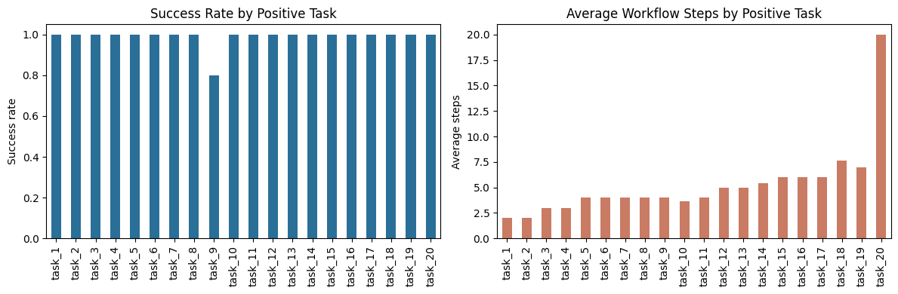

01. Benchmark: 25 Example Functions
Note Metadata
- Date: 2026-03-15
- Status: draft
Why This Note Exists
This note supports a narrow release-facing question: can workflow_auto_assembler assemble simple linear workflows from typed tool schemas and refuse tasks that require missing capabilities?
It should be read as a release-supporting research note, not as a formal research paper.
Intro
Claim
When tools are exposed through explicit input and output schemas, an LLM can often synthesize a correct simple linear workflow by stacking those tools into a larger typed procedure, while also rejecting tasks that require missing capabilities.
Methodology
Setup
The benchmark is defined in artifacts/workflow_auto_assembler/examples/test_examples.py and executed by artifacts/workflow_auto_assembler/examples/run_benchmark.py.
The system under test is workflow_auto_assembler operating over a fixed synthetic tool catalog. The benchmark contains 25 task specifications and 5 repeated runs per task, for 125 total runs.
The stored runs were executed with the gpt-oss:20b model through the benchmark harness configuration.
Data / Cases
Tasks 1 to 20 are intended to be solvable with the available tools. They cover single-step actions, short multi-step chains, and larger linear compositions that require non-trivial field matching between tool outputs and downstream inputs.
Tasks 21 to 25 are intentionally unsupported and require capabilities absent from the tool catalog: database write-back, OCR, embeddings/vector indexing, contract compliance analysis, and crypto transfer execution.
Method
The benchmark uses a synthetic catalog of 24 typed tools defined in artifacts/workflow_auto_assembler/examples/functions.py.
Planning is treated as a schema-matching problem: identify a linear sequence of tool calls whose outputs satisfy downstream inputs and eventually satisfy the requested output model.
Success is evaluated at two levels: whether a workflow can be assembled and completed, and whether the completed workflow passes the runner-based benchmark cases attached to the task.
Limitations
The tools are synthetic and mostly deterministic. External side effects are mocked rather than executed against live services. The benchmark does not provide a controlled analysis of token usage, cost, or latency. The workflows are mostly linear and do not yet stress branching, loops, or persistent state.
Analysis
Results
The headline metrics below summarize aggregate run-level performance before breaking the benchmark into intended positive tasks and intentionally unsupported tasks.
| metric | value | |
|---|---|---|
| 0 | Total runs | 125.0000 |
| 1 | Completed runs | 99.0000 |
| 2 | Run-level success rate | 0.7920 |
| 3 | Solved task types | 20.0000 |
| 4 | Completed test pass rate | 1.0000 |
| 5 | Average test retries | 0.0480 |
| 6 | Average workflow steps | 5.2929 |
| 7 | Distinct tools used | 24.0000 |
At the run level, the stored benchmark produced 99 / 125 completed workflows. At the task level, all 20 intended positive tasks were solved at least once. Among completed workflows, the benchmark records 990 / 990 passing benchmark cases.
Those aggregate numbers are useful, but the more informative split is between intended positive tasks and intentionally unsupported tasks.
| runs | completed | possible | success_rate | test_pass_rate | avg_test_retries | avg_workflow_steps | |
|---|---|---|---|---|---|---|---|
| task_id | |||||||
| task_1 | 5 | 5 | 5 | 1.0 | 1.0 | 0.0 | 2.0 |
| task_2 | 5 | 5 | 5 | 1.0 | 1.0 | 0.0 | 2.0 |
| task_3 | 5 | 5 | 5 | 1.0 | 1.0 | 0.0 | 3.0 |
| task_4 | 5 | 5 | 5 | 1.0 | 1.0 | 0.0 | 3.0 |
| task_5 | 5 | 5 | 5 | 1.0 | 1.0 | 0.0 | 4.0 |
| task_6 | 5 | 5 | 5 | 1.0 | 1.0 | 0.0 | 4.0 |
| task_7 | 5 | 5 | 5 | 1.0 | 1.0 | 0.0 | 4.0 |
| task_8 | 5 | 5 | 5 | 1.0 | 1.0 | 0.0 | 4.0 |
| task_9 | 5 | 4 | 4 | 0.8 | 1.0 | 0.8 | 4.0 |
| task_10 | 5 | 5 | 5 | 1.0 | 1.0 | 0.0 | 3.6 |
| task_11 | 5 | 5 | 5 | 1.0 | 1.0 | 0.0 | 4.0 |
| task_12 | 5 | 5 | 5 | 1.0 | 1.0 | 0.0 | 5.0 |
| task_13 | 5 | 5 | 5 | 1.0 | 1.0 | 0.0 | 5.0 |
| task_14 | 5 | 5 | 5 | 1.0 | 1.0 | 0.0 | 5.4 |
| task_15 | 5 | 5 | 5 | 1.0 | 1.0 | 0.0 | 6.0 |
| task_16 | 5 | 5 | 5 | 1.0 | 1.0 | 0.0 | 6.0 |
| task_17 | 5 | 5 | 5 | 1.0 | 1.0 | 0.0 | 6.0 |
| task_18 | 5 | 5 | 5 | 1.0 | 1.0 | 0.0 | 7.6 |
| task_19 | 5 | 5 | 5 | 1.0 | 1.0 | 0.0 | 7.0 |
| task_20 | 5 | 5 | 5 | 1.0 | 1.0 | 0.4 | 20.0 |
The positive set shows strong stability. 19 of the 20 intended tasks completed in all 5 / 5 repeats. task_9 completed in 4 / 5 repeats and is the only partially unstable positive case. task_20, the longest positive workflow, completed in all repeats with an average of 20.0 workflow steps.
| runs | completed | possible | success_rate | |
|---|---|---|---|---|
| task_id | ||||
| task_21 | 5 | 0 | 0 | 0.0 |
| task_22 | 5 | 0 | 0 | 0.0 |
| task_23 | 5 | 0 | 0 | 0.0 |
| task_24 | 5 | 0 | 0 | 0.0 |
| task_25 | 5 | 0 | 0 | 0.0 |
The unsupported tasks show an equally important property: none of them produced a workflow. The planner did not just succeed when capabilities existed; it also refrained from asserting workflows when the required capabilities were missing.

Interpretation
These results support a narrow claim about schema-first workflow synthesis, not a broad claim about general autonomous planning.
Explicit schemas appear to help in two ways: they guide tool selection and they make the assembled workflow testable as a composed typed object.
Capability boundaries also appear legible to the planner: unsupported tasks were rejected consistently instead of being forced into hallucinated workflows.
| avg_duration_s | min_duration_s | max_duration_s | |
|---|---|---|---|
| task_id | |||
| task_9 | 2517.0 | 1185.7 | 2972.0 |
| task_20 | 2848.0 | 2688.9 | 2965.0 |
| task_21 | 1366.9 | 1098.1 | 1518.4 |
| task_22 | 1247.0 | 917.1 | 1407.2 |
| task_23 | 1365.8 | 1244.9 | 1481.4 |
| task_24 | 1222.3 | 1082.8 | 1502.5 |
| task_25 | 1311.5 | 973.2 | 1500.0 |
The duration slice adds one practical nuance. Unsupported tasks were not immediate cheap exits in the stored runs; the system still spent planning effort before concluding that no valid workflow existed. That suggests a next optimization target for this style of system: faster impossibility detection based on missing schema-level capabilities.
Conclusions
Takeaways
The benchmark supports a limited but meaningful claim: when tools are exposed through explicit input and output schemas, an LLM can often synthesize a correct simple linear workflow by stacking those tools into a larger typed procedure.
In the stored benchmark, that claim is supported by strong performance on the positive task set, zero benchmark-case failures among completed workflows, and consistent rejection of unsupported tasks.
Next Steps
Test the same idea under harder conditions: noisier tools, more ambiguous schemas, branching workflows, and live side effects.
Compare WAA against a plain tool-calling baseline so the value of explicit workflow assembly is measured rather than assumed.